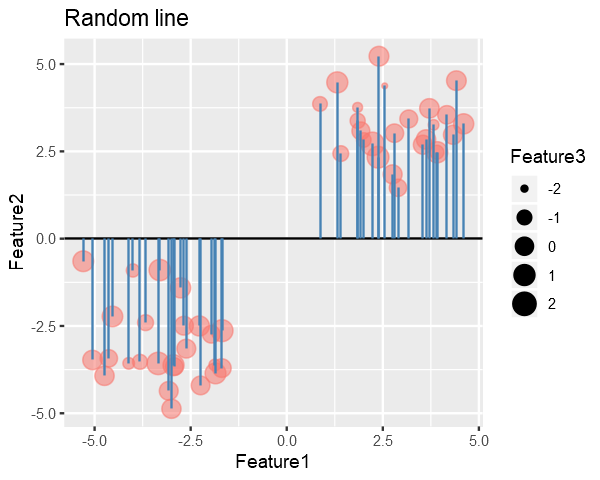
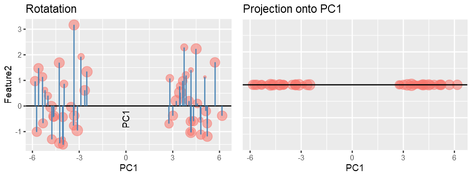
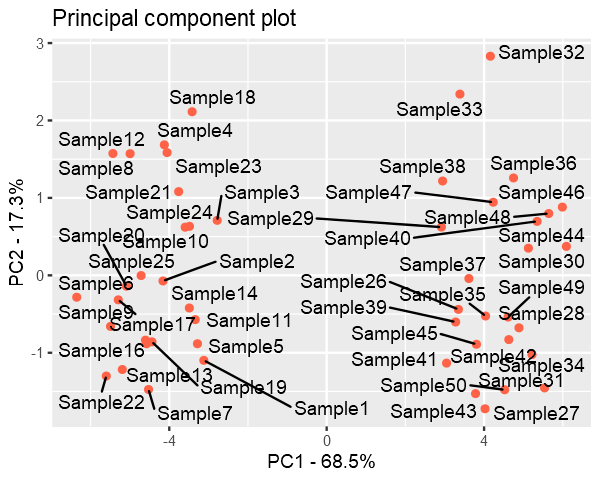
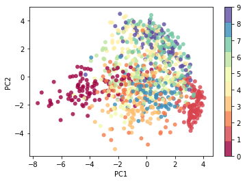
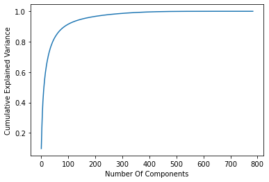
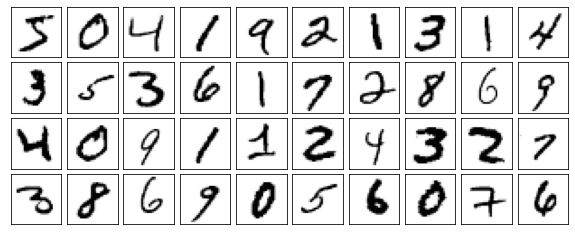
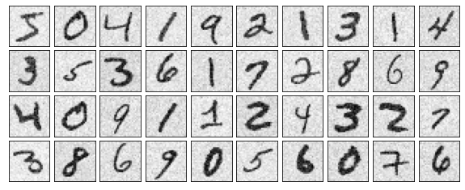

“Explain PCA using R and implementation from scratch in Python. Apply PCA to reduce dimensionality of MNIST Handwritten Digits, and Noise Reduction”
toc: false
branch: master
badges: true
comments: true
categories: [notebook, R]
image: images/vignette/pca.png
hide: false
search_exclude: true
Structure
I have used R for some of the tasks and Python for the implementation of the PCA from scratch. If you are not familiar with R, you can still understand all of the material.
You can see the code by clicking on show code befor each code cell.
PCA is a dimensionality reduction technique used in Data Analysis and Machine Learning.
Why we need PCA? In Data Analysis, we can easily visualize a dataset with upto three features but for four or more features we can’t envisage the data thus we use PCA to make it 3-D, 2-D or even 1-D with minimum loss of inherent distribution of the data.
In Machine Learning, a dataset with large number of features is computationally expensive and thus PCA can be used to reduce the number of features that do not account for much variance in the dataset. > PCA requires working knowledge of eigenvalues and eigenvectors.
Code in the below cell generates a synthetic dataset with 3 Features and 50 Samples generated from multivariate random distribution and without any covariance between the features.
Feature3 is represented by the size of the point i.e larger the point => larger the Feature3
As it can be seen in the plot, there are two clusters in the data. So we would like to reduce dimensionality in such a way that it preserves these clusters.
Our goal is to remove the 3rd dimension(Feature3) from the generated data with minimal loss in the structure of the data.
A dataset with N-Samples and M-Features can be considered as a [N X M] matrix and we know that every matrix has a set of pairs of Eigenvalues and their corresponding Eigenvectors associated with it.
Eigenvecotrs are usual vectors and thus we know they refer to some direction.
Intuitively the Eigenvalues tells the amount of variance in data, in the direction of its corresponding Eigenvector.
Therefore the the Eigenvector with the highest Eigenvalue is the principal component of the data i.e. direction of maximum variance in the data.
The maximum variance Eigenvector will be the one for which the Sum of Squared Distances (SSD) from points to the vector is minimum.
To find the Principle Component, we try to find the best fitting line for the data, similar to linear regression.
We might start with randomly drawing a line and then iteratively try to reduce the SSD to find best fitting line (In practice we use the Closed-Form Solution not iterative). (contin.)
In the figure below, the blue lines represent the distance b/w line and points, and our goal in PCA is to minimize their squared sum.
# collapseslope <-0# Get the endpoints of pointsperp.segment.coord <- function(x0, y0, a=0,b=1){#finds endpoint for a perpendicular segment from the point (x0,y0) to the line# defined by lm.mod as y=a+b*x x1 <- (x0+b*y0-a*b)/(1+b^2) y1 <- a + b*x1list(x0=x0, y0=y0, x1=x1, y1=y1)}ss<-perp.segment.coord(data[,1], data[,2], 0, slope)p <- ggplot() +geom_point(data=data.frame(data), aes(x=Feature1, y=Feature2, size=Feature3, color="red", alpha=0.24)) +geom_abline(slope = slope, intercept =0) +guides(color=F, alpha=F) +ggtitle("Random line") +geom_segment(data=as.data.frame(ss), aes(x = x0, y = y0, xend = x1, yend = y1), colour ="steelblue")options(repr.plot.width =5, repr.plot.height =4)p

Clearly we can do better than this, Line-1 is approximately the best fitting line. Line-1(the best fit) is called the PC1 (Principle Component 1) which accounts for the most variance.
Your code contains a unicode char which cannot be displayed in your
current locale and R will silently convert it to an escaped form when the
R kernel executes this code. This can lead to subtle errors if you use
such chars to do comparisons. For more information, please see
https://github.com/IRkernel/repr/wiki/Problems-with-unicode-on-windows

Once we have found the PC1, PC2 will be a line perpendicular to PC1 and PC3 will be perpendicular to PC2 and so on, because for a symmetric matrix Eigenvectors are always orthogonal to each other and Eignevalues are always real.
We get other PC’s by simply projecting the data onto them.
Maximum number of PC’s = minimum(features, samples)
The projected data will act as new Feature and we can discard the Features/PC’s which accounts for less variance.
Why PC’s are always orthogonal (optional)
In practice, if the data has a shape [n x m] i.e. n-samples and m-features, PC’s are calculated using either Scatter Matrix or Covariance Matrix for the data. Both of these are symmetric matrices with shape [m x m] (as covariance is calculate between features and the diagonal represents the variance) and therefore their Eigenvectors must be orthogonal, this property is proved using Spectral Theorem.
In a real world situation, we measure values of features on the original scales/axes i.e. Real Number line but this may not capture maximum essence of the data and therfore through PCA we essentially change our axes such that it now explains the data better than the original axes.
Computing PCA and Scree Plot
I’ll use prcomp() utility of R to calculate Principal Components of the data and then discard the component with less variance the reduce dimensionality.
# collapsepca <- prcomp(data)# prcomp returns x, stdev, rotation# where x is the data transposed on PC's
Scree Plot: it shows the variance captured by each principal components.
Finally we plot the data with reduced dimensions and it is evident from the figure that even if we discard the PC3, PC1 and PC2 still captures most of the distribution of the data.
Data is still divided into two clusters.
pca.data = data.frame(Sample=rownames(pca$x), X = pca$x[,1], Y = pca$x[,2])ggplot(data=pca.data, aes(x = X, y = Y, label = Sample)) +geom_point(color='tomato') +geom_text_repel() +xlab(paste("PC1 - ", pca.var.per[1], "%", sep ="")) +ylab(paste("PC2 - ", pca.var.per[2], "%", sep ="")) +ggtitle("Principal component plot")

PCA form scratch using Python
Overview of functions used:
center_data() - to scale the data such that each feature in the dataset has mean 0
principal_component() - returns the PC’s (eigenvectors) of the data
project_onto_PC() - perform dimensionality reduction by projecting the data onto PC’s
plot_PC - used() to visualize the resulting image after dimensionality reduction
reconstruct_PC() - reconstruct an image from PCA
Feel free to read the docstrings of functions to get an overview of their functionality.
import numpy as npimport matplotlib.pyplot as pltdef project_onto_PC(X, pcs, n_components):""" Given principal component vectors pcs = principal_components(X) this function returns a new data array in which each sample in X has been projected onto the first n_components principcal components. Args: X - n x d Numpy array pcs - d x d Numpy array with each column as an eigenvector sorted in decreasing order of their corresponding eigenvalues. n_components - (scalar) top principal components Returns: projected_data - n x n_components Numpy array with n samples and n_components features """# Step1: Center the data such that for each feature of a sample, mean = 0.# This step is often called scaling X_bar = center_data(X)# Step2: Projection onto the n_components principal components. n_pcs = pcs[:, :n_components] projected_data = X_bar @ n_pcsreturn projected_datadef center_data(X):""" Returns a centered version of the data, where each feature now has mean = 0 Example: X = [[2, 2, 1], [0, 1, 2], [1, 0, 3]] mean = [1, 1, 2] centered_X = [[2 - 1, 2 - 1, 1 - 2], [0 - 1, 1 - 1, 2 - 2], [1 - 1, 0 - 1, 3 - 2]] Args: X - n x d NumPy array of n data points, each with d features Returns: n x d NumPy array X' where for each i = 1, ..., n and j = 1, ..., d: X'[i][j] = X[i][j] - means[j] """ feature_means = X.mean(axis=0)return(X - feature_means)def principal_components(X):""" Returns the principal component vectors of the data, sorted in decreasing order of eigenvalue magnitude. This function first caluclates the covariance matrix and then finds its eigenvectors. Why center the data? for a matrix with d-features, covariance matrix of features is given by: Cov(X) = (X - mu_X).T @ (X - mu_X) by centering the data it becomes, Cov(X) = X.T @ X Note: If we do not center the data then the resulting matrix is called Scatter Matrix Args: X - n x d NumPy array of n data points, each with d features Returns: d x d NumPy array whose ****columns are the principal component directions**** sorted in descending order by the amount of variation each direction (these are equivalent to the d eigenvectors of the covariance matrix sorted in descending order of eigenvalues, so the first column corresponds to the eigenvector with the largest eigenvalue """ centered_data = center_data(X) # first center data scatter_matrix = centered_data.T @ centered_data eigen_values, eigen_vectors = np.linalg.eig(scatter_matrix)# Re-order eigenvectors by eigenvalue magnitude: idx = eigen_values.argsort()[::-1] eigen_values = eigen_values[idx] eigen_vectors = eigen_vectors[:, idx]return eigen_vectorsdef plot_PC(X, pcs, labels):""" Given the principal component vectors as the columns of matrix pcs, this function projects each sample in X onto the first two principal components and produces a scatterplot where points are marked with the digit depicted in the corresponding image. labels = a numpy array containing the digits corresponding to each image in X. """ pc_data = project_onto_PC(X, pcs, n_components=2) text_labels = [str(z) for z in labels.tolist()] fig, ax = plt.subplots() ax.scatter(pc_data[:, 0], pc_data[:, 1], alpha=0, marker=".")for i, txt inenumerate(text_labels): ax.annotate(txt, (pc_data[i, 0], pc_data[i, 1])) ax.set_xlabel('PC 1') ax.set_ylabel('PC 2') plt.show()def reconstruct_PC(x_pca, pcs, n_components, X):""" Given the principal component vectors as the columns of matrix pcs, this function reconstructs a single image from its principal component representation, x_pca. X = the original data to which PCA was applied to get pcs. """# X - (X - mu_X) = mu_X = feature means# Alternatively, # feature_means = X.mean(axis=0) feature_means = X - center_data(X) feature_means = feature_means[0, :] x_reconstructed = np.dot(x_pca, pcs[:, range(n_components)].T) + feature_meansreturn x_reconstructed
Application-1: Data Analysis
For the demonstration of capability of PCA, I’ll use MNIST Dataset with 60000 images of size - 28x28. Each image consists of 28*28 = 784 features, and using PCA I’ll reduce the number of features to only 2 so that we can visualize the dataset.
Even when we reduce the the data to such low dimensionality, the data will still contain some level of structure. That’s the power of PCA.
Later on we’ll see how do we know, how many Components are enough to properly describe the dataset, and how many are redundant.
from keras.datasets import mnist(data, labels), (_, _) = mnist.load_data()# Scale the datasetdata = data.astype('float') /255print(f"Loaded mnist dataset with shape: {data.shape}")n_components=2flatten_data = data.reshape((60000, 28*28))pcs = principal_components(flatten_data)pca_data = project_onto_PC(flatten_data, pcs, n_components)print(f"Original data shape: {data[0].shape}")print(f"Projected data shape: {pca_data[0].shape}")plt.scatter(pca_data[:1000, 0], pca_data[:1000, 1], c=labels[:1000], edgecolor='none', alpha=0.8, cmap=plt.cm.get_cmap('Spectral', 10))plt.xlabel('PC1')plt.ylabel('PC2')plt.colorbar();
Loaded mnist dataset with shape: (60000, 28, 28)
Original data shape: (28, 28)
Projected data shape: (2,)

Essentially, we have found the optimal stretch and rotation in 784-dimensional space that allows us to see the layout of the digits in two dimensions, and have done this in an unsupervised manner—that is, without reference to the labels.
Decide the Number of Components
For this task I’ll utilize the sklearn.decomposition.PCA to get explained_variance_ratio_
from sklearn.decomposition import PCApca = PCA().fit(flatten_data)plt.plot(np.cumsum(pca.explained_variance_ratio_))plt.xlabel('Number Of Components')plt.ylabel('Cumulative Explained Variance');

As you can see, with using just 100 out of 784 components we can capture more than 90% of the variance in the data.
Application-2: Machine Learning
With a simple visualization I’ll explain how reducing the dimensionality with PCA is useful.
The original image could be reconstructed if we use all of the PC’s but here I used only 18 PC’s and as you can see the reconstructed image still resembles the digit - three.
Reducing the dimensionality to sheer 18-Dimensions will still have fair amount of structure to be useful in a machine learning algorithm. This will save a lot of computational cost especially in case where dimensionality of data is very high. PCA often improves accuracy by eliminating the irrelevant features from the data.
Application-3: Denoising
def plot_digits(data): fig, axes = plt.subplots(4, 10, figsize=(10, 4), subplot_kw={'xticks':[], 'yticks':[]}, gridspec_kw=dict(hspace=0.1, wspace=0.1))for i, ax inenumerate(axes.flat): ax.imshow(data[i].reshape(28, 28), cmap='Greys')print("Origina Digits without any noise")plot_digits(flatten_data)
Origina Digits without any noise

#Introduce some gaussian noise into the images.np.random.seed(42)noisy = np.random.normal(flatten_data, 0.1)plot_digits(noisy)print("Noisy Images")
Noisy Images

pca = PCA(0.50).fit(noisy)print(f"Components accountable for 50% variance: {pca.n_components_}")
Components accountable for 50% variance: 15
Here 50% of the variance amounts to 15 principal components. Now we compute these components, and then use the inverse of the transform to reconstruct the filtered digits.
PCA has several application apart from those mentioned above. It’s even used in facial recognition. PCA plays useful role especially when we want to reduce dimensionality with low computational cost. PCA is very light algorithm and takes only few seconds to process very large datasets. Because of the versatility and interpretability of PCA, it has been shown to be effective in a wide variety of contexts and disciplines. Given any high-dimensional dataset, try to start with PCA in order to visualize the relationship between points (as we did with the digits) and to understand the intrinsic dimensionality (by plotting the explained variance ratio). Certainly PCA is not useful for every high-dimensional dataset, but it offers a straightforward and efficient path to gaining insight into high-dimensional data.
Scree-Plot and Cumulative Explained Variance prove to be very useful in every scenario.